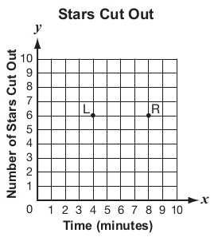

Lovelle and Rachel are cutting out stars to decorate a poster. In the graph below, Lovelle’s progress is represented by the point L, and Rachel’s progress is represented by the point R.

From the sentences below, pick the statement that is true about Lovelle and Rachel’s progress.